|
Подпрограмма — это фрагмент кода, который
имеет свое имя и создается в случае необходимости выполнять этот
код несколько (много) раз. Подпрограмма описывается единожды
перед началом основной программы (до begin).
Компилятор пропускает данный фрагмент кода, пока в основной
программе не встретит «вызов» подпрограммы, который выглядит как
обращение к ней по имени (возможно, имени с аргументами,
указанными в скобках).
Во многих языках программирования подпрограммы существуют только
в виде функций. Однако в
Паскале подпрограмма — и функция и процедура. Разница
между ними станет очевидна в данном уроке.
Итак, рассмотрим синтаксис
объявления и описания процедуры в Паскале
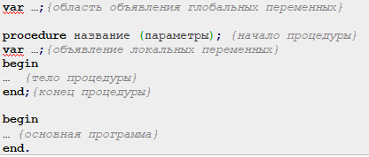
Пример: Процедура без параметров, которая
печатает 60 звездочек, каждую с новой строки
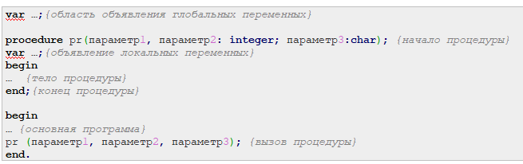
В данном примере работы с процедурой в Паскале очевидно, что
компилятор пропустит блок описания процедуры и дойдет до
основной программы (9 строка кода). И только после того, как
встретится вызов процедуры (10 строка), компилятор перейдет к ее
выполнению, вернувшись к строке 1.
ПРОЦЕДУРЫ С
ПАРАМЕТРАМИ. ФАКТИЧЕСКИЕ И ФОРМАЛЬНЫЕ ПАРАМЕТРЫ
Рассмотрим пример необходимости использования процедуры.
Пример:
Построить фигуру
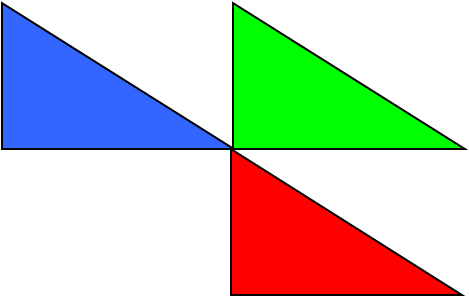
Особенность: Три похожие
фигуры.
общее: размеры, угол
поворота
отличия: координаты, цвет
Алгоритм решения:
-
выделить одинаковые или похожие действия (три
фигуры);
-
найти в них общее (размеры,
форма, угол поворота) и отличия (координаты,
цвет);
-
отличия записать в виде неизвестных переменных,
они будут параметрами процедуры.
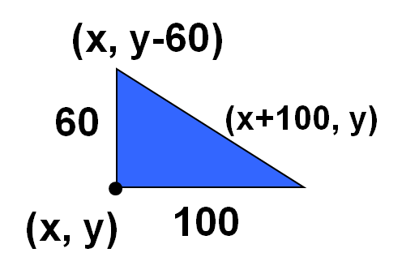
Решение на паскале:
Процедура: описание.
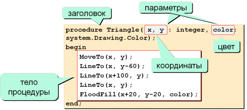
Решение: использование
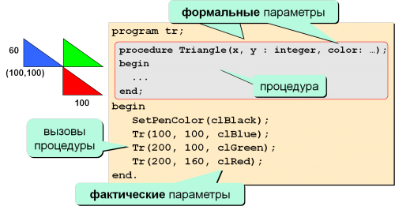
Программа:
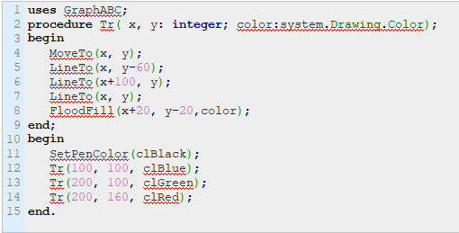
Рассмотрим синтаксис объявления и описания процедуры с
параметрами в Паскале.
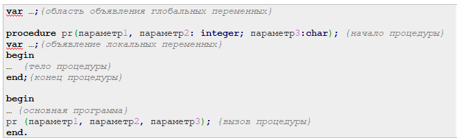
Параметры процедуры (в некоторых языках
они называются аргументами) указываются в скобках после ее имени
(в объявлении).
В данном примере в качестве введенного символа будем
использовать параметр процедуры. Формальный
параметр процедуры указывается в скобках
при ее описании. Обязательно необходимо указать тип формального
параметра через двоеточие.
Фактический параметр — это то значение,
которое указывается в скобках при вызове процедуры.
Фактическим
параметром может быть конкретное значение (литерал: число,
символ, строка…) либо переменная, которые компилятор подставит
вместо формального параметра. Поэтому тип данных у формального и
фактического параметра процедуры должен быть одинаковым.
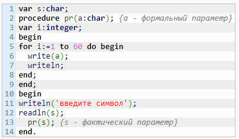
В данном примере при вызове процедуры компилятор заменит
формальный параметр a фактическим
параметром s,
т.е. тем символом, который будет введен с клавиатуры. Оба
параметра имеют тип данных char.
-
число фактических параметров должно быть равно
числу формальных параметров;
-
соответствующие фактические и формальные
параметры должны совпадать по порядку следования
и по типу данных.
ПРОЦЕДУРЫ С
ПАРАМЕТРАМИ. ПАРАМЕТР-ПЕРЕМЕННАЯ
(ПЕРЕДАЧА ПАРАМЕТРА ПО ССЫЛКЕ)
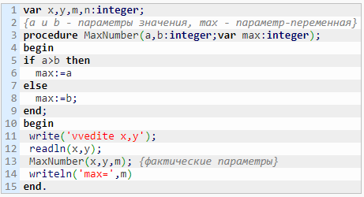
В примере формальные
параметры a и b служат
для помещения в них сравниваемых чисел, а
параметр-переменная max —
для сохранения в ней максимального из двух
чисел. Параметр-переменная или выходной
параметр передает свое
значение в основную программу (фактическому
параметру m),
т.е. возвращает значение, тогда как формальные параметры-значения (входной
параметр), наоборот, принимают значения из
основной программы (из фактических параметров x и y).
Для параметра-переменной (max)
используются те ячейки памяти, которые отведены
под соответствующий параметр при вызове
процедуры (ячейка m).
Таким образом, сформулируем понятия:
Если в качестве формального параметра указана
обычная переменная с указанием ее типа, то такой
параметр есть параметр-значение или входной
параметр (a и b в
примере). Тип данных формального
параметра-значения должен соответствовать типу
данных его фактического параметра (a и b должны
попарно соответствовать типу данных x и y).
Если перед именем формального параметра в
объявлении процедуры стоит служебное слово var,
то такой параметр называется параметром-переменной или выходным параметром
(max в
примере). Для него используются те ячейки
памяти, которые отведены под соответствующий
параметр при вызове процедуры (m).
А передача такого параметра называется
передачей по ссылке
(ссылка на ту же ячейку в памяти). Фактический
параметр, соответствующий параметру-переменной,
может быть только переменной (не константой, не
литералом и не выражением).
Использование параметров-переменных
позволяет тратить меньше памяти
ПЕРЕДАЧА
АРГУМЕНТОВ ПО ЗНАЧЕНИЮ И ПО ССЫЛКЕ
Рассмотрим более подробно два этих понятия:
-
Передача по значению: Значение
фактического параметра копируется в
соответствующий формальный параметр. Изменение
формального параметра не ведет к изменению
фактического параметра
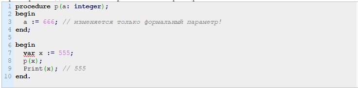
-
Передача по ссылке: Оба параметра и
формальный и фактический ссылаются на одно и то
же расположение в памяти, поэтому все изменения
в теле процедуры отражаются и на фактическом
параметре.
-
Изменение формального параметра изменяет и
фактический параметр тоже:
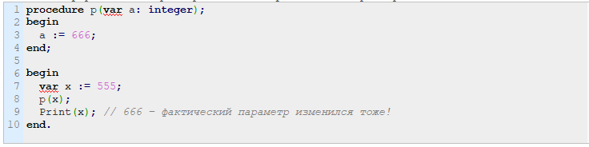
|